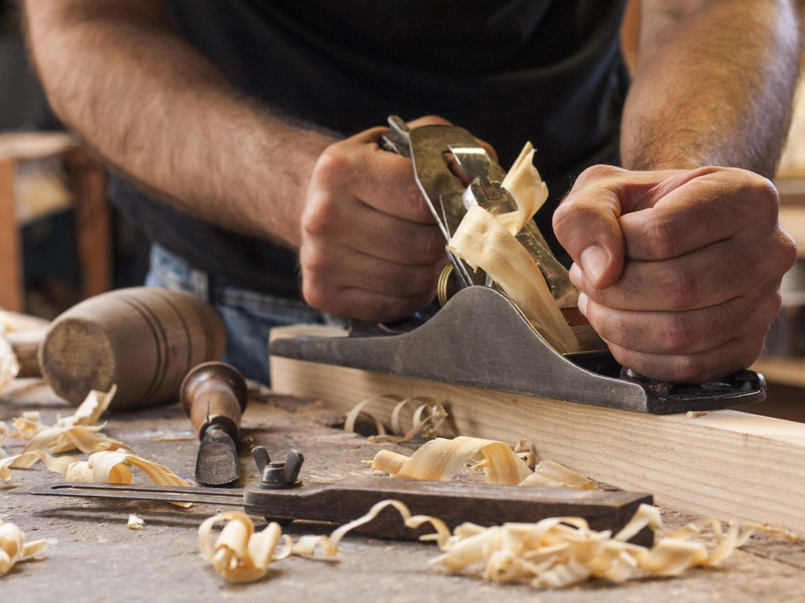
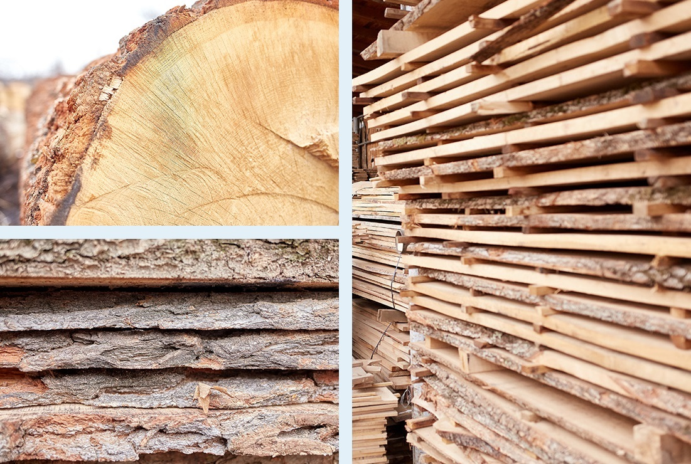
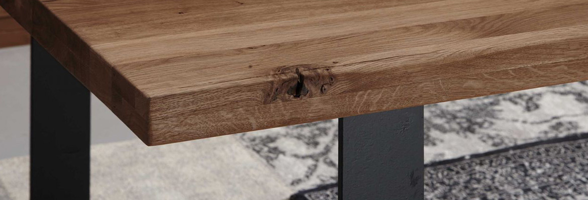

Solid wood
Why do we appreciates solid wood so much? How to recognize solid wood? Here you can learn more about the wood itself and why it's so satisfying material for furniture production.

We use the term “solid wood” extensively: especially in the industrial sector or when someone is buying furniture and comes across “solid wood”. But not all wood is equally solid. What then solid wood actually means? What degree of requirements do solid woods have to meet? And are there uniform quality standards?
Definition: what is solid wood?
Solid wood refers to wood products in which we can assign the wood to a tree species (e.g. beech, oak, or pine). We also speak of pure wood here. Processing of such woods is usually natural, i.e. the treatment is without using mechanical or chemical means. To be able to process solid wood, certain work steps are necessary: For further use, workers in lumber mill carve wooden cross-sections or panels out of the tree trunk which then they cut to the required size and separate into lamellas and boards for an industry.

From tree to table: this is how furniture is made from solid wood
But what are the details of making solid wood furniture? Contrary to what one might initially assume, a carpenter doesn't carve a piece of wooden furniture out of the trunk in one piece. Instead, dried natural wood is turning into wooden panels. Gluing them firmly together permanently connects one to another. The requirements are that the wood has the same cross-section, the same length, and also the same type of wood. Putting now the dried wooden elements together creates a laminated wood panel, from which making a solid piece of furniture is now possible.

Quality criteria of solid wood: quality classes and more
From the above, we know that wood products made from solid wood must meet certain criteria to consider them as quality products that solid wood stands for. In the case of solid wood products, all parts of a wood species must be assignable. That means: all parts must be made of the same solid wood.
However, there's an exception for furniture: solid wood isn't part of the rear walls of cupboards or bottom compartments of drawers. A cabinet made of solid oak with drawer bottoms or a back wall made of wood composite (plywood or MDF) can still carry the quality criterion “solid wood”. When describing a piece of furniture with the attribute “solid”, such wood needs to be the only material of the fronts, side panels, and top panels. One speaks of "partially solid" when solid wood isn't a material of individual parts.
Checklist: How do you recognize solid wood?
If you know what to look out for, you can usually clearly identify the solid wood:
| Criteria | Description |
|---|---|
| Weight | Solid wood is significantly heavier than plywood or MDF. Therefore, the weight of a piece of furniture already allows concluding the quality. |
| Grain and wood appearance | Solid wood furniture is a natural product. No two pieces of wood are alike, so each section looks different. A regular pattern of wood and characteristic knotholes, which repeatedly stretch across the surface in the same shape, are indications of a replica. Solid wood is always individual! |
| A look at the edges | A look at the edges helps to distinguish solid wood from veneers or a replica. With real solid wood furniture, the wood pattern continues on the edge - you can see that the wood structure "continues". You can grasp it with all senses: simply run your finger over the edges and examine the wood image, and check for completeness. If you've felt glue between the edges, this indicates that it isn't solid wood. |
With a little practice and the right know-how, you can identify the pieces of furniture made from solid wood.

Conclusion: solid wood as a durable and sustainable raw material
Robust, stable, and extremely durable - solid real wood is a long-lasting and reliable companion. As an organic and renewable raw material, this natural product is very versatile and offers numerous advantages. Various finishing methods, such as oiling and varnishing, bring out the natural beauty of wood individually.